Žádné zmrazené polotovary rozpékané po měsících ve skladech. V supermarketu Fresh sázíme na čistou řemeslnou práci. Naši pekaři pro vás přímo na prodejně denně zadělávají těsto z regionální mouky a pečou křupavé bochníky i voňavé koláče každých pár hodin.
Vyberte si ze čtyř základních kategorií pečiva, které pro vás pekaři ručně tvarují z prvotřídních surovin.
Filtr alergenů
Zaškrtněte alergeny, které chcete vyloučit
Náš bestseller
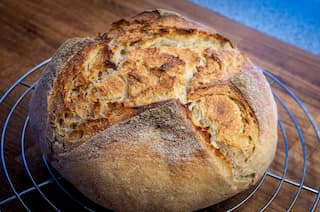
Zlínský kváskový chléb
Tradiční pšenično-žitný chléb postavený na našem vlastním třífázovém kvasu. Vyniká pórovitou střídkou a dlouhou čerstvostí.
Hmotnost: 800 gAlergeny: 1
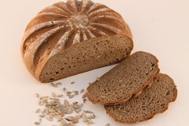
Slunečnicový chléb
Tmavší hutnější střídka s vysokým podílem lněných a slunečnicových semínek, která pečením uvolňují příjemnou oříškovou vůni.
Hmotnost: 500 gAlergeny: 1, 11
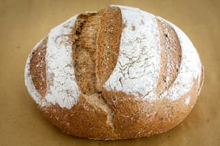
Podmáslový chléb kulatý
Přídavek čerstvého regionálního podmáslí dodává chlebu nevídanou vláčnost. Střídka zůstává měkká a nadýchaná po celé dny.
Hmotnost: 600 gAlergeny: 1, 3, 7
V této kategorii žádné pečivo neobsahuje vyloučené alergeny – všechny produkty jsou dočasně skryty. Upravte filtr alergenů.
Z pravého másla
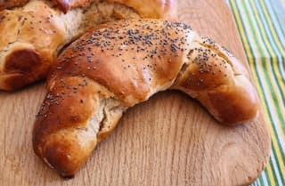
Máslový loupák
Jemné kynuté těsto s poctivou dávkou čerstvého másla, ručně pletené a sypané českým modrým mákem. Klasika ke snídani.
Hmotnost: 60 gAlergeny: 1, 3, 7
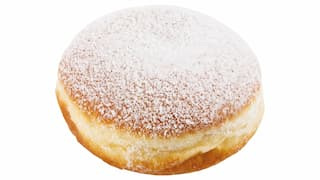
Kobliha s meruňkovým džemem
Smažená kobliha z lehkého žloutkového těsta, plněná výběrovou moravskou meruňkovou zavařeninou s kousky ovoce.
Hmotnost: 65 gAlergeny: 1, 3, 6, 7
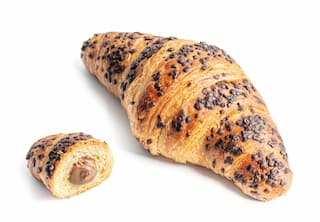
Čokoládový croissant
Vícelistové nadýchané těsto francouzského typu, prokládané máslem a plněné dvěma tyčinkami pravé belgické čokolády.
Hmotnost: 75 gAlergeny: 1, 3, 6, 7
V této kategorii žádné pečivo neobsahuje vyloučené alergeny – všechny produkty jsou dočasně skryty. Upravte filtr alergenů.
Pečeme nonstop
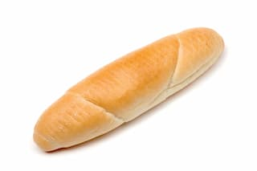
Zlínský standardní rohlík
Naše chlouba. Obyčejný rohlík dovedený k dokonalosti díky přesnému kynutí a vysokému podílu ruční práce při tvarování.
Hmotnost: 43 gAlergeny: 1
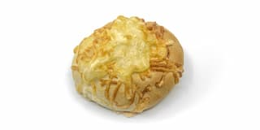
Zapečená sýrová bulka
Nadýchaná světlá bulka vydatně posypaná strouhaným lokálním sýrem Gouda, který na povrchu vytvoří neodolatelnou krustu.
Hmotnost: 70 gAlergeny: 1, 7
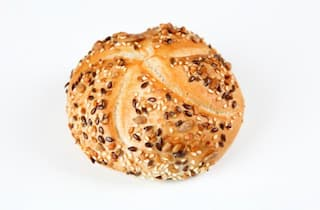
Vícezrnná kaiserka
Cereální kaiserka s příměsí slunečnicových, lněných a sezamových semínek, bohatá na vlákninu. Ideální základ pro zdravou svačinu.
Hmotnost: 50 gAlergeny: 1, 11
V této kategorii žádné pečivo neobsahuje vyloučené alergeny – všechny produkty jsou dočasně skryty. Upravte filtr alergenů.
Regionální receptura
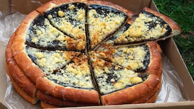
Valašský frgál povidlový
Pravý tenký frgál s vysokým podílem švestkových povidel ovoněných rumem a skořicí, zasypaný poctivou máslovou drobenkou.
Hmotnost: 600 gAlergeny: 1, 3, 7
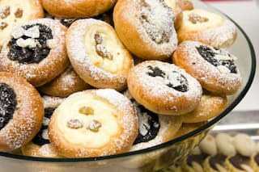
Dvojctihodný svatební koláček
Tradiční moravská miniatura plněná uvnitř sladkým tvarohem a zdobená na povrchu kapkou švestkových povidel a máslovou žmolenkou.
Hmotnost: 50 gAlergeny: 1, 3, 7, 8
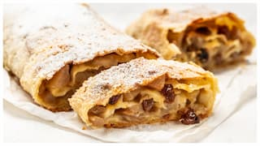
Domácí jablečný závin
Tažený závin plněný čerstvými kyselkavými jablky od sadařů ze Zlínska, provoněný cejlonskou skořicí, rozinkami a sekanými ořechy.
Hmotnost: 400 gAlergeny: 1, 3, 7, 8
V této kategorii žádné pečivo neobsahuje vyloučené alergeny – všechny produkty jsou dočasně skryty. Upravte filtr alergenů.
Harmonogram pečení
Chcete pečivo ještě teplé? Náš harmonogram se přizpůsobí reálnému času. Níže zvýrazněný slot ukazuje, co pro vás pekaři právě teď vytahují z pece.
Ranní křupavé rohlíky & slané pečivo
První ranní várka klasických rohlíků, housek, kaiserek a sýrových bulek pro vaše perfektní snídaňové nákupy hned po otevření.
Právě vytaženo
Tradiční řemeslné kváskové chleby
Hlavní pečení našeho ikonického zlínského kváskového chleba a semínkových bochníků. Kůrka v peci nádherně praská.
Právě vytaženo
Máslové loupáky, koblihy & jemné pečivo
Sladká vlna z pece. Nadýchané máslové loupáky a plněné čokoládové croissanty přímo k vaší dopolední kávě.
Právě vytaženo
Valašské frgále & jablečné záviny
Pečení velkých frgálů a tažených jablečných závinů. Celá prodejna se v tuto dobu nádherně provoní skořicí a rozpuštěným máslem.
Právě vytaženo
Odpolední čerstvá várka pro večerní stůl
Druhé pečení nejoblíbenějších pšenično-žitných chlebů a světlého slaného pečiva pro zákazníky, kteří se vrací z práce domů.
Právě vytaženo
Naši lokální dodavatelé
Špičkový výsledek vyžaduje nekompromisní suroviny. Proto podporujeme regionální výrobce ze Zlínska a okolí.
Kroměřížský průmyslový mlýn
Odtud odebíráme hladkou pšeničnou a chlebovou žitnou mouku. Je mleta výhradně z obilí vypěstovaného zemědělci na úrodné Hané, bez jakýchkoliv umělých zlepšovadel a enzymů.
Rodinná mlékárna z Vizovic
Zajišťuje pro nás každodenní závoz čerstvého podmáslí, plnotučného mléka a poctivého 82% másla. Suroviny s čistým původem z podhůří Beskyd dodávají našemu sladkému těstu typickou křehkost.